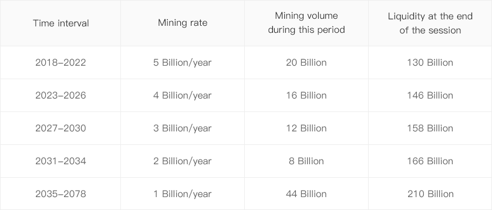

- Home
- Whitepaper
- Roadmap
- Q&A
-
EN

t the first stage of development, DCO Network will not be as a stand-alone blockchain program, but rather as a DAPP running in Ethereum, EOS and etc. operating system platforms. While the DCO will provide series of protocols, tools and basic services, on the strength of DCO, users can creating and operating a distributed collaborative project organization(DCO). Therefore, the DCO can be viewed as a platform composed by the middleware (middleware) and application (App). The DCO, all kinds of DCO, as well as related communities, trading institutions, organizations and services, constitute the DCO ecology jointly.
First of all, DCO is a human collaboration for value creation. For the purpose of value creation, it requires the DCO members share common goals and strong cooperation, which is obviously different from loosely coupled and weakly connected network information sharing communities, or social networks based on interests and relationships.So that, a software development team is DCO, a film script writing team is DCO, but an online BBS that only talks about the movie, or an online fan club that only praises a star, they are not DCO.
There is no doubt that strong collaboration requires motivation.In DCO, every member has the absolute freedom to quit, in order to provide sufficient incentives, DCO will issue its own creative Distributed Organization Token(DCOT) as the main value and incentive Material, at the same time, DCO will establish a distribution mechanism and exchange rules fairness and efficiency to make the project successful.
After the rise of smart contract technology, DAO was be build as a form of human organization on the blockchain proposed by Dan Larimer. As the name implies, DAO has two outstanding features, the first is decentralization, members of the organization shall use the currency right as the sole certificate of entitlement; the second is automated governance, where organizations operation automatically based on a range of smart contracts.
We believe that DAO is a very important organizational platform on blockchain, but it is not the only one. DCO does not require the organization must be decentralized, or the rights within the organization must be based on currency rights, and not require the replacement of artificial governance mechanism by smart contracts. DCO hands these decisions over to the organization itself, only providing the necessary tools to help the organization build and operation. For example, a DCO can be developed in a centralized way, and appoint one person as the final decision maker.Another DCO may use the share of DCOT as the distribution mechanism of voting rights. DCO may issue a special HOT representative decision right, even could make a price transfer of decision right. DCO collaboration can be diverse, as long as people across geographic and border can build a strong collaboration on the Internet, it is DCO.
From the above description, DAO is also a DCO.
After the rise of smart contract technology, DAO was be build as a form of human organization on the blockchain proposed by Dan Larimer. As the name implies, DAO has two outstanding features, the first is decentralization, members of the organization shall use the currency right as the sole certificate of entitlement; the second is automated governance, where organizations operation automatically based on a range of smart contracts.
We believe that DAO is a very important organizational platform on blockchain, but it is not the only one. DCO does not require the organization must be decentralized, or the rights within the organization must be based on currency rights, and not require the replacement of artificial governance mechanism by smart contracts. DCO hands these decisions over to the organization itself, only providing the necessary tools to help the organization build and operation. For example, a DCO can be developed in a centralized way, and appoint one person as the final decision maker.Another DCO may use the share of DCOT as the distribution mechanism of voting rights. DCO may issue a special HOT representative decision right, even could make a price transfer of decision right. DCO collaboration can be diverse, as long as people across geographic and border can build a strong collaboration on the Internet, it is DCO.
From the above description, DAO is also a DCO.
Each DCO needs to define and issue its own internal master token, called DCO Token, or DCOT. For example, if the team developing the PostgreSQL database is transformed into a DCO, they can issue PSQL.DCO as their own internal master token, and the team developing the EOS can issue EOS.DCO as their own internal master token.
The existence and application of DCOT is a fundamental difference between DCO and traditional online organizations. According to different DCO settings, DCOT can be a utility token, a security token, or a hybrid one. The DCO determines the specific use and benefits of DCOT.
DCOT is also the equity base for DCO to obtain mining revenue.
The Higher Order Token (HOT) is an encrypted digital token defined by the DCO based on its own DCOT.
In the study of the Token, we found that the Token is hierarchical. For example, in the DCO Network, the DCO coin is a zero-order standard Token, and the DCOT of each DCO is defined based on the DCO coin and is priced in DCO coin, so it is a first-order Token. Correspondingly, if a higher level token is defined on the basis of DCOT, it can be called a high order token.
The so-called "high-order" means that the price of HOT is a function of the corresponding base DCOT price, or HOT is a derivative of DCOT. In fact, in specific applications, HOT can represent various interests, commodities, and qualifications in the DCO.
HOT has many uses, such as:
* A DCO can release a reward for solving a problem as a HOT. If the developer solves the problem, you can get the HOT and choose the time you think is appropriate.
* The DCO can also establish a class of HOT that represent decision-making voting rights, which can separate political rights from economic rights.
* DCO also can sell a limited edition digital badge denominated in DCOT.
* A DCO can express the right to use one of its online software services (such as 6 months service, 12 months service) as HOT. After purchasing this HOT, users can enjoy the service of corresponding duration. If the user ends the service, there is still the remaining service time in the HOT, and the user can sell the HOT in the secondary market.
* The DCO can also package several offers and benefits in an aggregated HOT, where users can purchase, enjoy the services, and resell them.
The trade of HOT will form an active market in the DCO Network
DCO Net work is a platform for the vertical field of software development. It provides DCO with services far beyond the common blockchain platforms such as Ethereum and EOS, including but not limited to:
* Easy to distribution, rich CV and economic system templates, let DCO “one-click certification”
* By using a technology like "Lightning Network", you can do creat distribution, payment, transfer etc effectively. Most operations can be completed in seconds at DCO Net work.
* The original high-order pass (HOT) concept and technology support a wide range of application scenarios. The same function is required in the Ethereum and EOS development to complete complex smart contracts.
* Before 2078, DCO obtained the DCO coins by selling DCOT, and get the mining revenue.
* Through flexible applications DCOT and HOT, DCO can easily create complex economic and governance behaviors such as creation, management, decision making, trading, financing, incentives, and distribution on DCO Net work.
The DCO is the digital standard currency in the entire DCO Network. Each DCO in the DCO Net work must unconditionally accept DCO as the basic currency for transaction intermediation, value measurement.
DCO is the base currency, playing the role of the digital currency support its high-order pass, smart contracts and DAPPs in the global developer community. In other words, in the DCO ecosystem, high-order passes can only be purchased in DCO, and as a value unit of measure in smart contracts and DAPP.
Bitcoin and Ethereum are the Digital standard currency in the entire cryptocurrency and blockchain industry, and they are more fundamental than DCO.DCO can be traded for Bitcoin, Ethereum and other encrypted digital currencies on the market.
Therefore, if a user want to sell a high-order pass on the DCO platform and obtain Bitcoin or Ethereum, he needs to sell the pass to obtain the DCO first and then exchange the DCO into Bitcoin or Ethereum.
A total of 21 billion DCO coins were issued, which were all released from 2018 to 2078 and will never be issued. The distribution plan is as follows:
DCO mines through self-developed POS.
So when the DCO economy develops rapidly, DCO coins will tend to deflate. In this case, the DCO Fund Management Committee can conduct a partial reverse repurchase to increase market liquidity.
The total number of DCO is 21 billion, of which 6 billion are used for private placement, marketing, community building, team incentives, etc., 5 billion are used as fund reserves, and 10 billion will be mined between 2018 and 2078.
Among them, 3 billion private placements accounted for 14.3% of the total DCO issuance, and plans to raise 30,000 ETH.
Please refer to Chapter 4 for the specific allocation plan.
Between 2018 and 2078, new DCO coins were issued through mining. Mining is performed for a fixed period of time (determined by the height of the underlying chain block).
The mining body of the DCO coin is the DCO. All DCOs joining DCO mine based on their own DCO reserves.
The main purpose of the DCO token is to purchase other passes issued by the DCO on the DCO Network, as well as the products and services offered. The DCOT issued by each DCO can only be purchased by DCO.
DCO Network encourages DCO to express all of its products and services as a pass, but it is not mandatory, so each DCO can still sell its products and services at DCO.
Typical scenarios are as follows:
* Users use DCO to purchase DCOT or HOT from a DCO.
* Users use DCO to order Web services provided by a DCO
* The user purchases an e-book provided by a DCO with DCO
* User rewards an author or question responder with DCO
* DCO uses DCO to compete for mining rights
* The user holds a DCOT and wants to switch to another DCOT, using DCO as the transaction medium.
DCO is the base currency of the entire DCO Network ecosystem, playing a full range of trading media, value storage and value measurement.
The DCO Fund Management Committee plays a role as a governance body throughout the DCO Network ecosystem. The DCO Foundation has a starting capital of 5 billion DCO tokens and was initially locked. It will release 500 million DCO per year from 2018 to 2027, providing open market operations funds for the DCO Fund Management Committee. Each batch of funds used and market operations of the DCO Fund Management Committee will disclose the accounts and provide audit interfaces and tools to be monitored and audited by all DCOs and users. Large-scale operations will be announced in advance.
The DCO Fund Management Committee is composed of DCO core team and DCO representatives, with regular staff adjustments.
* vMarch 2018: White paper release and complete blockchain acceleration middleware development
* vMarch 2018: Complete preliminary design of system functions, release DCO, and develop DCO basic smart contract
* vMarch 2018: Complete private-equity
* vMay 2018: Complete the Ethereum beta version and began to realize the interface of Github and CSDN
* vProvide the Web Service for users order DCO with DCO
* vSeptember 2018: Complete the EOS beta version
* vOctober 2018: DCO in batch operation,launch mining and airdrop
* vJune 2019: Launch the self-developed token supporting system
* vDecember 2019: DCO Network 1.0 release